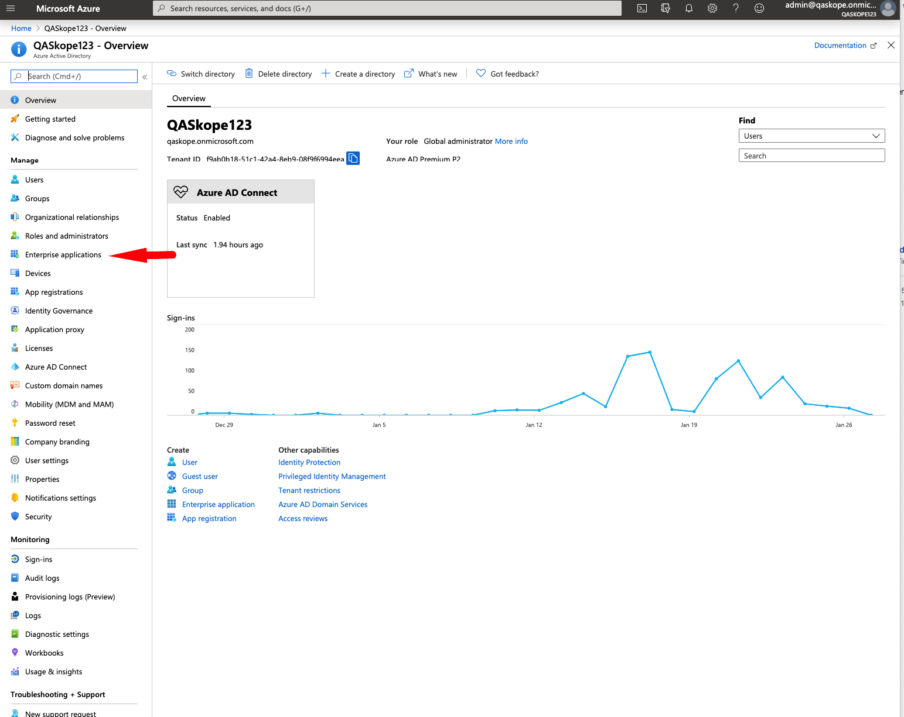
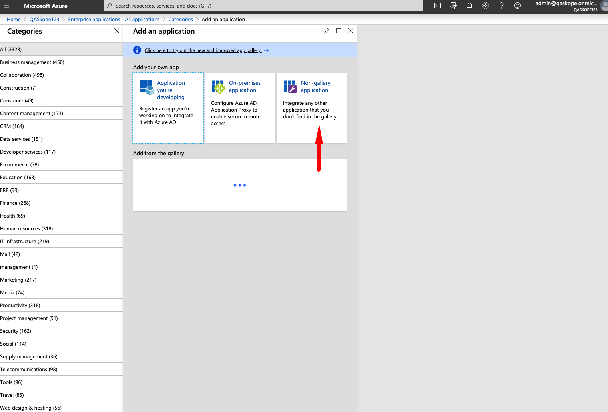
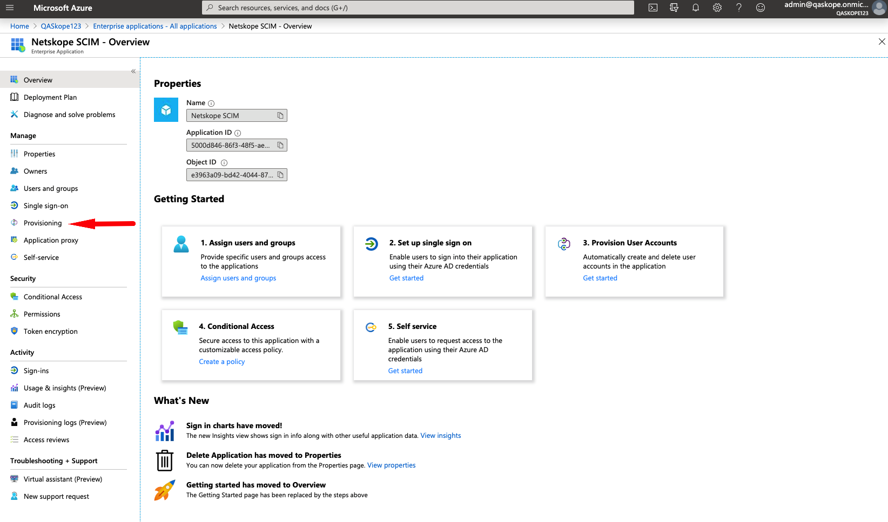
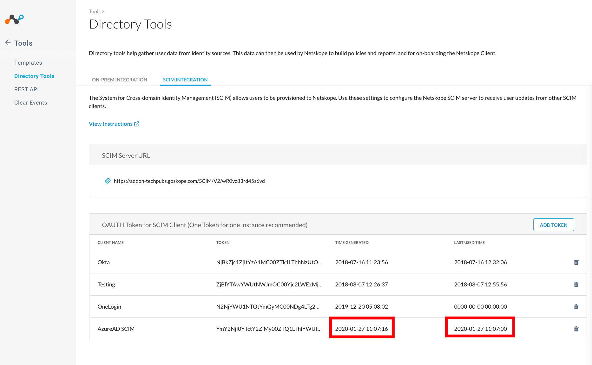

User Provisioning with Azure AD
This document provides step by step instructions to create a Netskope SCIM app on Azure AD for provisioning users to your Netskope tenant.
Here is a short video that illustrates the procedure to configure Netskope SCIM app for Azure AD.
Before Your Begin
Ensure that you have the following before you begin creating the Netskope SCIM app.
Global admin access to Azure AD admin console.
Obtain SCIM Base URL and SCIM token from your tenant.
Note
Azure AD does not support assigning apps to nested groups.
Creating Netskope SCIM App on Azure AD
Login to your Azure AD admin console with global admin credentials and follow the procedure given below:
Click Azure Active directory

In the Active Directory page options, click Enterprise Applications.
In the Enterprise Application page, click New Applications button.

Click Non Gallery Applications
In the Add Your Application section, enter a name for your Netskope SCIM app and click the Add button.

After your application is added, click Provisioning.
Select the provisioning mode to Automatic.

Enter the SCIM URL and Token and click Test Connection.

To obtain your SCIM URL, login to your Netskope tenant admin console and go to Settings > Tools > Directory Tools. The SCIM Integration tab has the SCIM Base URL. You can create a token for the specific app.

To verify if the connection between Azure AD and Netskope Tenant is successful, login to your Netskope tenant admin console.
Go to Settings > Tools > Directory Tools.
In the SCIM Integration tab, the OAuth token that you crated for your Azure AD add will be updated with timestamp of last use.

Toggle the Provision Status button to ON.

In the SCIM app options page, click Users and Groups to start adding users for provisioning.

Click the Add User button to create an assignment.
In the Add Assignment Page, click Users and Groups and then select the users to be provisioned.